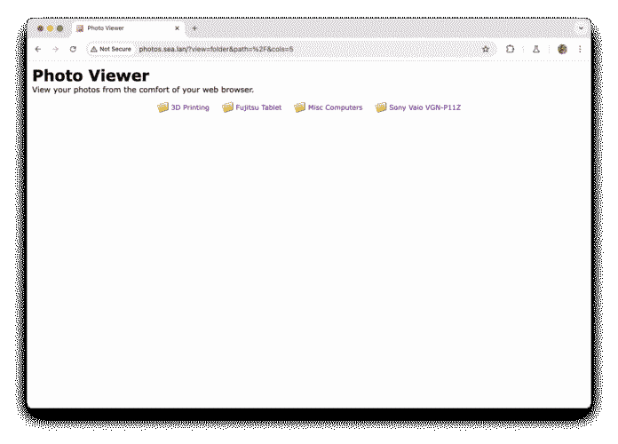
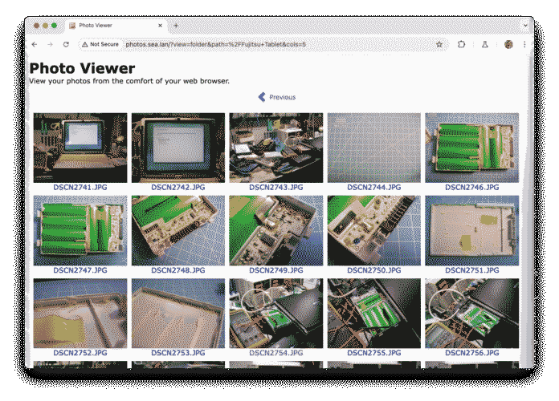
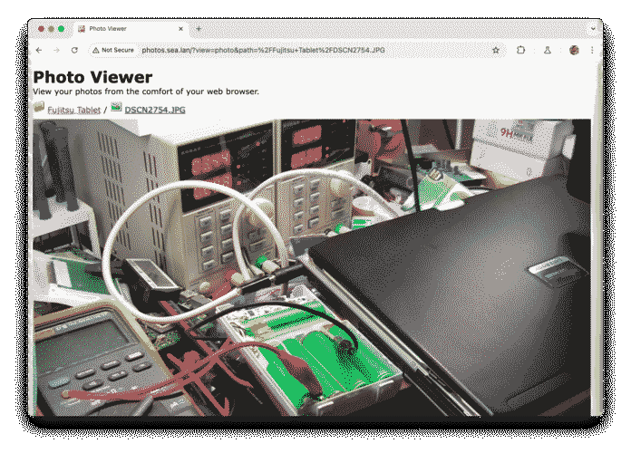
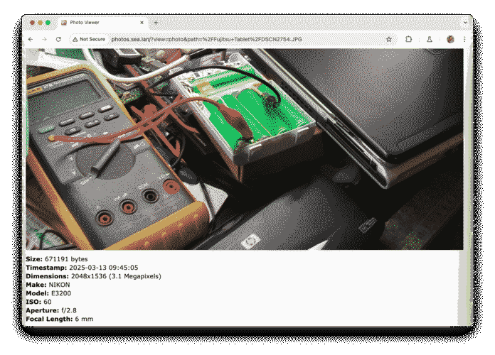

A super lightweight and retro-friendly PHP 5.4 photo viewer library and website. Great for sharing your digicam photos with your friends and family members, but also great if you want to use it as a library and build your own image gallery website with it.
The goal of this project is to be extremely simple, all that you
have to do is create a folder named photos and drop
your photos that you want displayed there. You can organize them
into folders, which subsequently will become albums in the gallery.
The thumbnails for each photo will be generated automatically by the
application and will be stored in a folder named thumbs.
|
 Home page of the application
|
 A folder/gallery page
|
 Top of a photo page
|
|
 Bottom of a photo page
|
This application was built to be retro-friendly both on the server side as well as the client side, so its requirements are quite small and their versions very old, so you can easily host this on anything built in the last 15 years as long as you satisfy the following requirements:
As is tradition with PHP applications of this era you can simply drop this repository inside a folder of your web server and it should be up and running already. The application works both inside a VirtualHost or in a subfolder of your web server automatically, no need to configure anything.
You must create a photos/ and a thumbs/
folders for the storage of photos and their thumbnails respectively.
The thumbnails are generated as needed by the application.
The .htaccess that's included with the project is
simply to guard against snooping inside the .git folder
and other development files. It's not required for the application
to run and contains nothing of importance.
There are a couple of variables you can tweak inside the index.php
source, feel free to do so if the defaults are not of your liking.
Also feel free to edit the layout and styling of the application as
much as you want.
Even though deploying this application is extremely simple and
straightforward if you already have a web server setup, most servers
these days are only hosts for Docker. To make this application also
easy to deploy on these environments a Dockerfile is
also included in the repository and can be easily deployed to using
a docker-compose.yml similar to this one:
---
services:
web:
build: .
restart: unless-stopped
ports:
- '8005:80'
volumes:
- ./photos:/var/www/localhost/htdocs/photos
This will expose the web server on port 8005 and will
create a volume for the photo storage folder from photos/
in the root of the repository. This configuration, as is, will keep
the thumbnail cache inside the container, meaning it will be deleted
when the container is restarted. If you want the thumbnail cache to
be persistent add another volume for the thumbs/
directory.
The application was intended to also work as a library for embedding
photo galleries into other websites, so the code is very modular and
everything is contained in the photo_viewer.php source
file, the index.php is simply a front-end for it.
You can import the photo_viewer.php into your
application and use it standalone to embed a similar feature right
into your own website. Use this repository as an example, read the
documentation inside the source file and you should have everything
you need to embed this feature.
If you create any additional functionality please contribute back your changes since it helps the community.